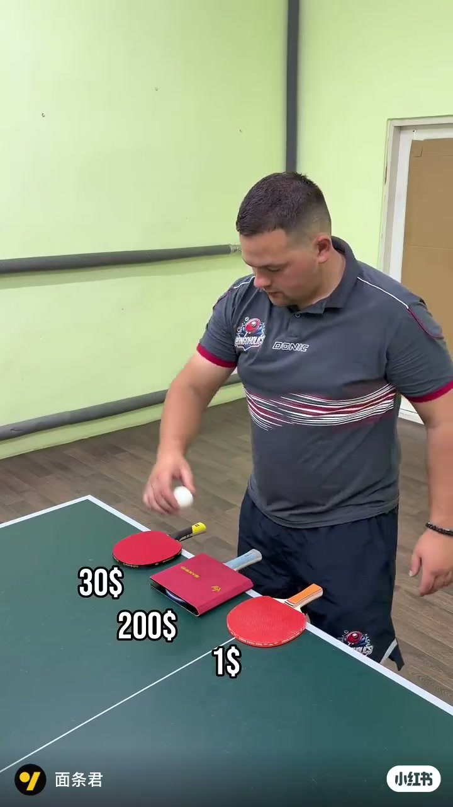
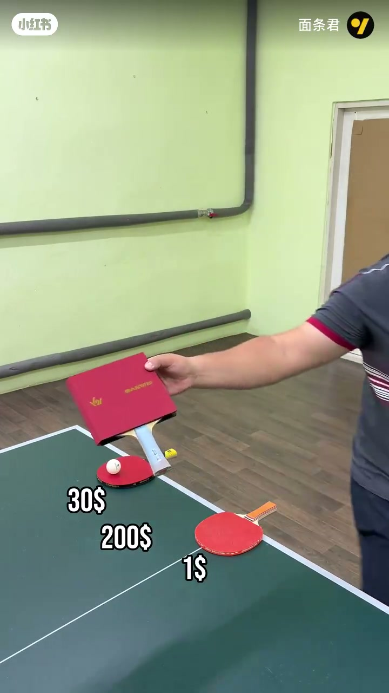
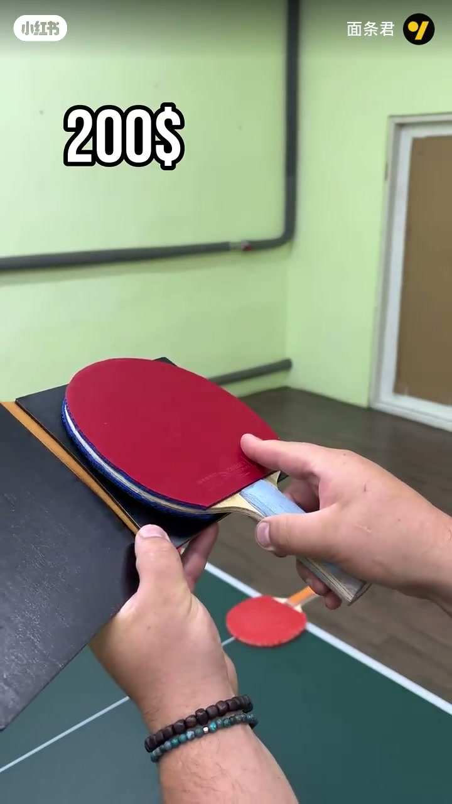
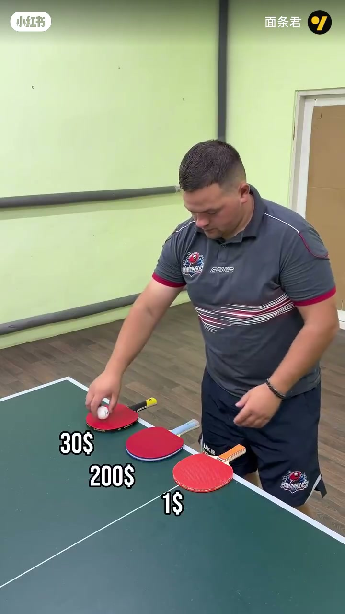
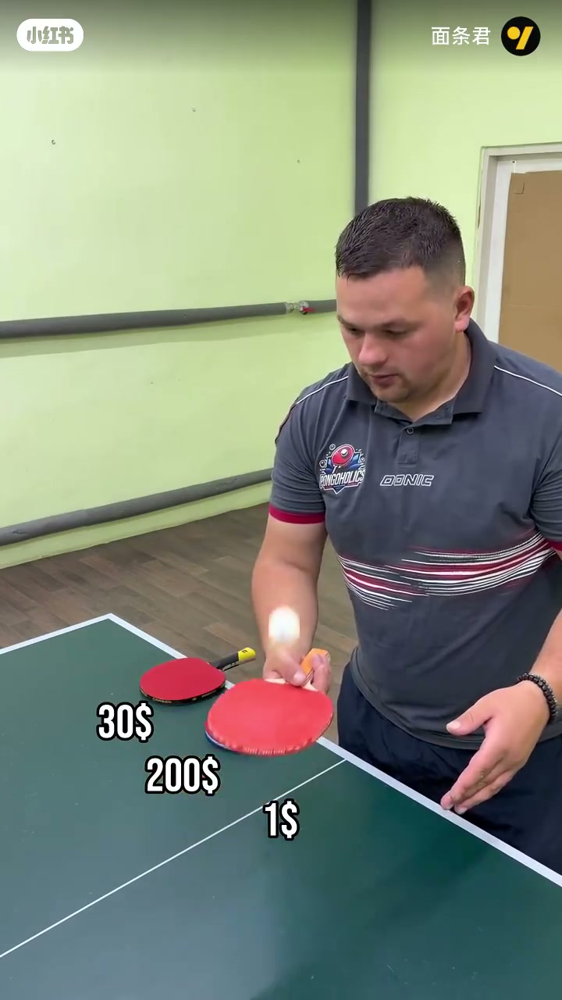
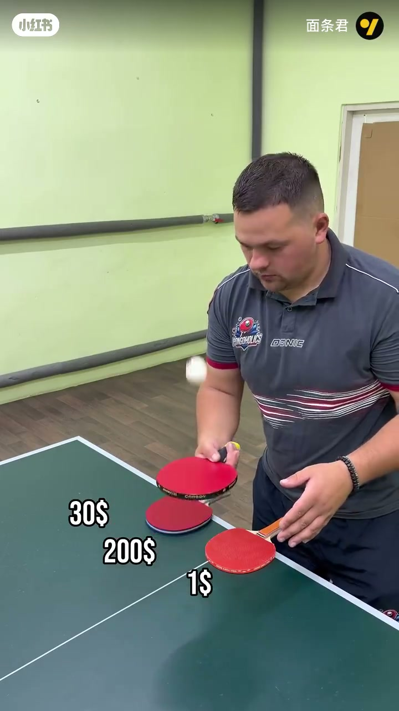
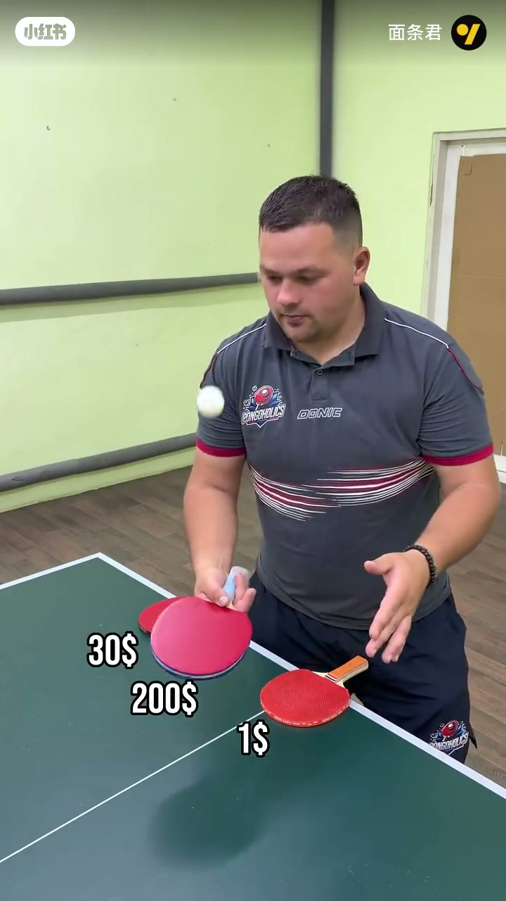
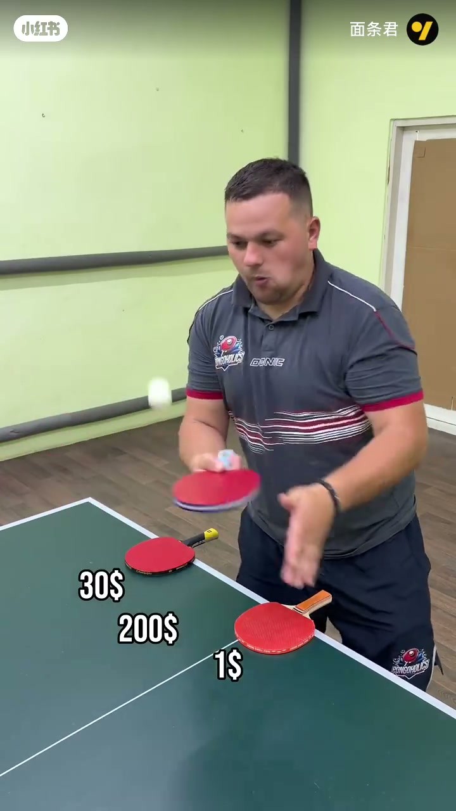

内容要点
账号「面条君」约一分钟乒乓球器材对比短片。标题「原来区别这么老大」。本地 Whisper segments 几乎全是 “-”，口播不可用；正文完全依据画面：桌上标注 1$ / 30$ / 200$ 三档球拍，演示弹跳/手感差异。具体口头结论听不清，不臆造。
知识结构
[00:00→00:20]
摆台
三档价签同框，展示拍形与胶皮。
[00:20→01:00]
弹跳演示
落球对比；差异靠画面自行观察。
总结
视觉实验：价位标签制造预期，弹跳画面给出「区别很大」的直觉证据；缺口播定量结论。
00:00–00:20三档球拍摆台
绿台面上同时出现标价 1$、30$、200$ 的红色胶皮拍。200$ 一档可见方形拍面与品牌字样，强调「贵」的视觉符号；创作者穿 DONIC/PONGOHOLICS 球衣，场景为室内球台。

[00:02] 开场摆台：1$ / 30$ / 200$ 三档球拍同框对比
Setup: $1 / $30 / $200 paddles on one table.

[00:08] 特写 200$ 方板拍面（SANWEI 等标识）
Close-up of the $200 square-faced paddle.

[00:15] 继续展示 200$ 拍面与柄带细节
More $200 face and grip details.
00:20–01:00弹跳对比（无可用口播）
随后将球落在不同拍面上做弹跳对比，价签始终叠加。因 ASR 为空，本页不写「弹性数值/推荐购买」类结论——请直接看弹起高度与节奏差异，并回看原片。

[00:22] 持拍准备落球，准备对比弹跳
Ready to drop the ball for a bounce test.

[00:30] 同桌落球对比：观察不同价位拍的弹跳差异
Bounce comparison across price tiers.

[00:38] 切换拍面继续弹跳演示，价签始终在画
Switch faces; price tags stay on screen.

[00:48] 多拍并排，球在 200$ 拍上连续弹跳
Repeated bounces on the $200 paddle.

[00:55] 收束对比：标题「原来区别这么老大」对应画面价差反差
Final side-by-side: the title’s ‘huge difference’ is visual.